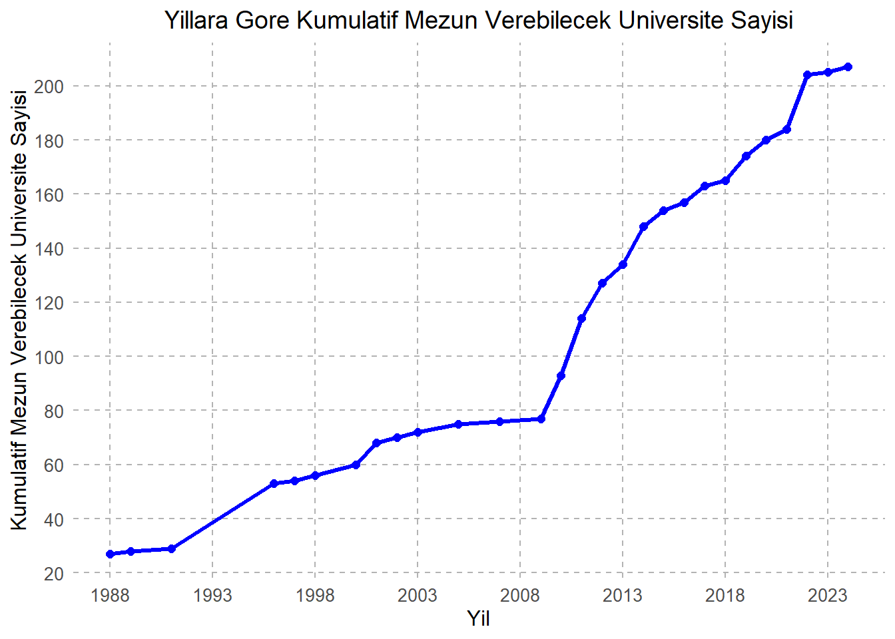
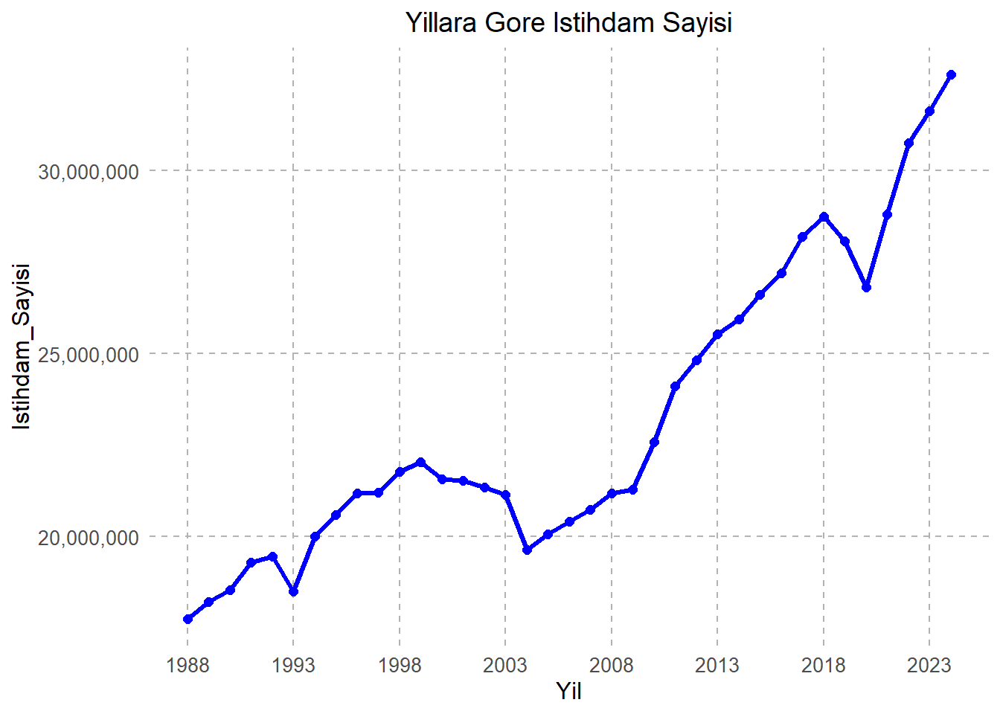
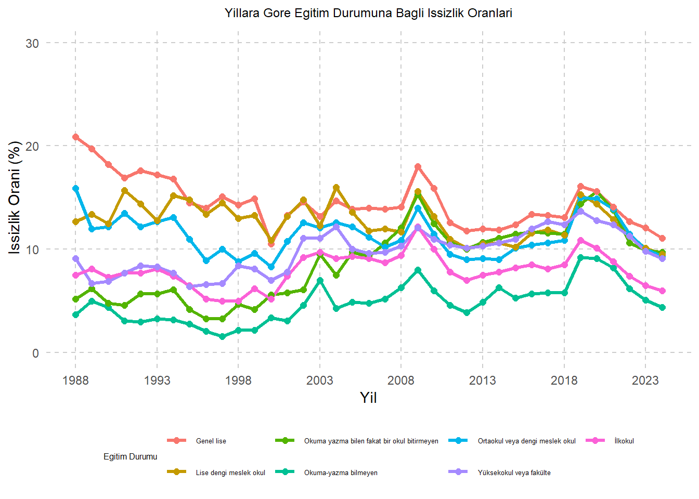

#install.packages("readxl")
#install.packages("dplyr")
#install.packages("DT")
#install.packages("htmltools")
#yukarıdakiler kurulu değilse kurmalısın
library(readxl)
library(dplyr)
library(ggplot2)
library(scales)
library(tidyr)
library(knitr)
library(DT)Üniversite Sayısının İstihdam ve İşsizliğe Etkisi
Proje sayfamıza hoş geldiniz!
Tuncay Özkardeş ve İzzet Can Özbaş olarak yürüttüğümüz bu projede; yıllara göre istihdam sayısı, yıllara göre mezun verebilecek üniversite sayısı son olarak ise yıllara ve eğitim durumuna göre işsizlik oranı istatistikleri ile bazı bulgular yakalamaya çalışacağız.
Güncellemeler için takipte kalın.
1. Proje Tanımı ve Kapsamı
Projemizin amacı aşağıdaki veriler ile kapsamlı bir istihdam/işsizlik analizi yapabilmek. İstihdam ve işsizlik verileri 1988’den beri tutulduğu için projemizin kapsamı 1988 yılı ve sonrası için geçerli olacak.
2. Veri
1) Yıllara göre istihdam sayısı (1988-2024)
2) Yıllara ve eğitim durumuna göre işsizlik oranı (1988-2024)
3) Üniversiteler hakkında genel bilgiler (Açık durumdaki tüm üniversiteler için geçerli bir veri. Buradan açılış yıllarını seçip mezun verebilecekleri yıla ulaşacağız).
2.1 Veri Kaynağı
https://data.tuik.gov.tr/ adresinden işsizlik ve istihdam verilerini topladık.
https://istatistik.yok.gov.tr/ adresinden üniversiteler hakkında genel bilgiler veri tabanına ulaştık.
2.2 Veri Hakkında Genel Bilgiler
İstihdam ve işsizlik ile ilgili veriler 1988’den beri tutulmaktadır. Üniversiteler hakkında genel bilgiler ise tüm açılmış üniversiteleri kapsamaktadır.
Bu projede kullandığımız ham veriler farklı kaynaklardan geldiği ve doğrudan analiz edilebilir formatta olmadığı için kapsamlı bir ön işleme (preprocessing) süreci uygulanmıştır.
2.3 Bu Verileri Neden Seçtik?
Uzun yıllardır gelişmekte olan ve işsizlikle boğuşan ülkemizde açılan üniversite sayısının istihdam oranına bir katkı sağlayıp sağlamadığına bakacağız.
İstihdam artış oranı ile işsizlik artış oranları arasındaki ilişkileri gözlemlemeye çalışacağız.
Üniversite mezunu işsizlerin üniversite sayısı ile bağlantısını göstermeye çalışacağız.
2.4 Ön Analiz
2.4.1 İstihdam Verisi
Ham veri TÜİK sitesinden yıllık bazda alınmıştır. 1988-1999, 2000-2013 ve 2014-2024 yıllarını kapsayan 3 farklı veri tabanı excel üzerinden direkt birleştirilmiştir.
Veride “Yıl” ve “İstihdam Sayısı” değişkenleri bulunmaktadır.
İstihdam sayıları bin kişi cinsinden verildiği için, 1000 ile çarpılarak (excel üzerinden yapıldı) gerçek kişi sayılarına dönüştürülmüştür.
Sütun isimleri Türkçe karakter içermeyecek şekilde ayarlanmıştır.
2.4.2 İşsizlik Verisi
Ham veri TÜİK’ten eğitim durumuna ve yıllara göre işsizlik oranları şeklinde alınmıştır.
İşsizlik verisinde yaş gruplarına göre olan kayıtlar çıkarılmış, sadece eğitim durumuna göre kayıtlar alınmıştır. Sütun adları standartlaştırılmıştır (örneğin: “İlkokul”, “Ortaokul”, “Üniversite”).
Yıl bilgisi eksik veya farklı kodlanmış olan satırlar temizlenmiştir. (excel üzerinden yapıldı)
Data long forma çevrilmiştir. Detaylı form açıklamasına 2.5 başlığında görebilirsiniz.
2.4.3 Üniversiteler Verisi
Ham veri YÖK Atlas veri tabanından alınmıştır.
Verideki ilk satır başlık bilgisi olduğu için çıkarılmıştır.
Kuruluş yılı bilgisi Kuruluş Yılı kolonundan alınmıştır.
Üniversitelerin mezun vermeye 4 yıl sonra başladığı varsayılarak, her üniversite için “Mezun Verebileceği Yıl” = “Kuruluş Yılı” + 4 şeklinde hesap yapılmıştır.
1988 yılı öncesinde mezun verebilecek üniversiteler ayrıca hesaplanarak 1988 yılına başlangıç değeri olarak eklenmiştir.
1988–2024 yılları arasındaki yıllık ve kümülatif mezun verebilecek üniversite sayıları hesaplanmıştır.
2.5 Veriyi Kullanıma Hazır Hale Getirme
Öncelikle aşağıdaki gibi paketleri yüklemeli ve ilgili kütüphaneleri çağırmalıyız.
Projemizin içine açtığımız Project_Data isimli klasörün içine excel dosyalarımızı atıp bunları R üzerinden görelim.
istihdam <- istihdam <- read_excel("Project_Data/Istihdam.xlsx")
issizlik <- read_excel("Project_Data/IssizlikOranlari.xlsx")
universiteler_raw <- read_excel("Project_Data/Universiteler.xlsx",skip = 1)
datatable(istihdam)datatable(issizlik)datatable(universiteler_raw)Üniversite verisinde ilk satırı (başlığı) atalım. 2. Sütun ismini Kurulus_Yili olarak değiştirelim. Daha sonra gg.aa.yy formatındaki tarihin sadece yıl kısmını alalım. Son olarak mezun verebileceği yılları yan sütuna kaydedelim. Ayrıca en üstteki satır başlık olduğu için onu da yukarıda skip=1 diyerek atladık.
universiteler <- universiteler_raw %>%
select(Kurulus_Yili) %>%
mutate(
Kurulus_Yili = as.numeric(substr(Kurulus_Yili, 7, 10)), # Sadece yıl kısmını çekiyoruz (2010 gibi)
Mezun_Verebilecegi_Yil = Kurulus_Yili + 4
)
datatable(universiteler)1988’den önce mezun verebilecek durumdaki üniversiteleri bulmalıyız. Çünkü, 1988 den ihtibaren kümülatif ilerleyeceğiz. Amacımız bir yıldaki mezun verebilecek üniversite sayısını görebilmek.
# 1. 1988'den önce mezun verebilecek üniversite sayısını hesaplayalım
ilk_toplam <- universiteler %>%
filter(Mezun_Verebilecegi_Yil < 1988) %>%
summarise(toplam = n()) %>%
pull(toplam)
print(ilk_toplam)[1] 271988’den sonra yıllık olarak mezun verebilecek üniversite sayısını hesaplayalım.
uni_sayisi <- universiteler %>%
filter(Mezun_Verebilecegi_Yil >= 1988, Mezun_Verebilecegi_Yil <= 2024) %>%
group_by(Mezun_Verebilecegi_Yil) %>%
summarise(mezun_verebilecek_uni_sayisi = n()) %>%
rename(Yil = Mezun_Verebilecegi_Yil) %>%
arrange(Yil)
#1988 yili yoksa manuel olarak eklemeliyiz (grafiklerimiz bu tarihten ihtibaren baslayacak)
if (!1988 %in% uni_sayisi$Yil) {
uni_sayisi <- bind_rows(
tibble(Yil = 1988, mezun_verebilecek_uni_sayisi = 0), # 1988'de hiç yeni mezun yoksa bile sıfır olarak ekle
uni_sayisi
) %>%
arrange(Yil)
}
#1988 yılındaki üniversite sayısına 1988 ve öncesindeki mezun verebilecek üniversite sayısını eklemeliyiz.
uni_sayisi <- uni_sayisi %>%
mutate(mezun_verebilecek_uni_sayisi = ifelse(Yil == 1988, mezun_verebilecek_uni_sayisi + ilk_toplam, mezun_verebilecek_uni_sayisi))
#Kümülatif olarak artacağı için cusum kullanacağız.
uni_sayisi <- uni_sayisi %>%
mutate(kumulatif_mezun_verebilecek_uni_sayisi = cumsum(mezun_verebilecek_uni_sayisi))
datatable(uni_sayisi)Ufak bir grafik ile mezun verebilecek üniversite sayılarını görelim.
p <- ggplot(uni_sayisi, aes(x = Yil, y = kumulatif_mezun_verebilecek_uni_sayisi)) +
geom_line(color = "blue", linewidth = 1.2) + # Çizgi mavi
geom_point(color = "blue", size = 2) + # Noktalar mavi
scale_x_continuous(breaks = seq(1988, 2024, by = 5)) + # 5'er yıllık aralıklar x ekseninde
scale_y_continuous(breaks = seq(0, 220, by = 20)) + # y ekseninde 20'şer aralık
labs(
title = "Yillara Gore Kumulatif Mezun Verebilecek Universite Sayisi",
x = "Yil",
y = "Kumulatif Mezun Verebilecek Universite Sayisi"
) +
theme_minimal() +
theme(
panel.grid.major.x = element_line(color = "grey70", linetype = "dashed"), # X ekseni gridini kesik yap
panel.grid.major.y = element_line(color = "grey70", linetype = "dashed"), # Y ekseni gridini kesik yap
panel.grid.minor = element_blank(), # Minor gridleri kaldır
axis.text = element_text(size = 10),
axis.title = element_text(size = 12),
plot.title = element_text(size = 14, hjust = 0.5) # Başlığı ortala
)
print(p)
Görüldüğü üzere 88 yılına kadar mezun verebilen 27 üniversite bulunuyor. 2009 ve sonrası ise fazla bir artış söz konusu.
Şimdi de yıllara göre istihdam sayısında bir göz atalım.
ggplot(istihdam, aes(x = Yil, y = Istihdam_Sayisi)) +
geom_line(color = "blue", linewidth = 1.2) +
geom_point(color = "blue", size = 2) +
scale_x_continuous(breaks = seq(1988, 2024, by = 5)) +
scale_y_continuous(breaks = seq(0, 40000000, by = 5000000),
labels = label_comma()) + # burada değişiklik yaptık!
labs(
title = "Yillara Gore Istihdam Sayisi",
x = "Yil",
y = "Istihdam_Sayisi"
) +
theme_minimal() +
theme(
panel.grid.major.x = element_line(color = "grey70", linetype = "dashed"),
panel.grid.major.y = element_line(color = "grey70", linetype = "dashed"),
panel.grid.minor = element_blank(),
axis.text = element_text(size = 10),
axis.title = element_text(size = 12),
plot.title = element_text(size = 14, hjust = 0.5)
)
2018’den sonraki koronavirüs dönemindeki düşüşü gördünüz mü!
Şimdi Tidyr kullanarak işsizlik datasını long hale çevirelim ve normal/long hani arasındaki farkları görelim.
issizlik_long <- issizlik %>%
pivot_longer(
cols = -Yil,
names_to = "Egitim_Durumu",
values_to = "Issizlik_Orani"
)
datatable(issizlik)datatable(issizlik_long)Long data üzerinden tüm veriler için rahatça grafik çizebiliriz.
ggplot(issizlik_long, aes(x = Yil, y = Issizlik_Orani, color = Egitim_Durumu)) +
geom_line(linewidth = 1.2) +
geom_point(size = 2) +
scale_x_continuous(breaks = seq(1988, 2024, by = 5)) +
scale_y_continuous(limits = c(0, 30)) +
labs(
title = "Yillara Gore Egitim Durumuna Bagli Issizlik Oranlari",
x = "Yil",
y = "Issizlik Orani (%)",
color = "Egitim Durumu" # Legend başlığı
) +
theme_minimal() +
theme(
panel.grid.major.x = element_line(color = "grey80", linetype = "dashed"),
panel.grid.major.y = element_line(color = "grey80", linetype = "dashed"),
panel.grid.minor = element_blank(),
legend.position = "bottom", # Legend aşağıda
legend.title = element_text(size = 11),
legend.text = element_text(size = 10),
plot.title = element_text(size = 14, hjust = 0.5)
)
Göründüğü üzere üniversite okuyanların işsizlik oranı okuma yazma bilmeyenlerin oranına göre daha fazla! Devamına final projede detaylı olarak değineceğiz.
Son olarak verilerimizi Rdata formatında saklayalım.
save(istihdam, issizlik, issizlik_long, uni_sayisi, file = "Project_Data/son_veriler.RData")3. Analysis
xxxxxx
3.1 Exploratory Data Analysis
xxxxxx
3.2 Trend Analysis
xxxxxx
3.3 Model Fitting
xxxxxx
3.4 Results
xxxxxx
4. Results and Key Takeaways
xxxxxx